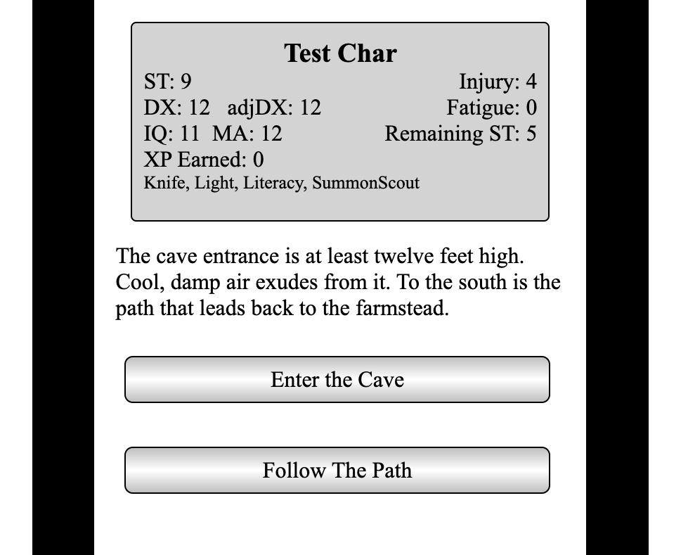

Welcome to the TFT Helper Adventure Creator! It's designed to make creating an adventure for TFT Helper as easy as possible. Thanks for checking it out!
You should see six tabs at the top of the screen. This first gives this overview of the process and some general guidance. The second tab explains how to write your adventure so the software can present it to the player. The third is where you write you adventure. The software will give you feedback about what you have written, pointing out problems that prevent the software from understanding what you wrote. The fourth tab is a simulator, that will let you make a dry run through your adventure to make sure it flows the way you intended. The fifth tab gives you scrambled adventure you can paste into TFT Helper your mobile device for real testing. This is also the block of text that you will ultimately share with the world. The sixth tab includes some examples of more involved adventure mechanics to clarify and inspire.
You should strive for a high level of professionalism in an adventure you plan to share. While you are not writing for SJ Games, you are writing for the customers of SJ Games and they are accustomed to quality writing. Keep it PG, no hate. The SJ Games writer's guidelines will be very helpful.
http://www.sjgames.com/general/guidelines/authors/Something as involved as this requires a lot of testing to be really reliable. Since we're relying on volunteer testers we'll probably never have that much testing. Thus while TFT Helper and player-created adventures are safe to run on your mobile device this feature of TFT Helper should be considered "beta" for the foreseeable future. If you run into any issues let us know at tfthelper@gmail.com.
Have fun!
Much GMing and narrative construction advice carries over, and we don't need to go over that here. But here are some guidelines to keep in mind.
Don't make it too easy. If players complete the adventure on the first run through they are likely to feel disappointed and not revisit your adventure.
Don't make it too hard. Specifically, there will only be a single character without a lot of resources so they won't be able to face a series of fearsome foes. Put in some weaker foes. Create paths by which clever adventurers can get around some foes. Put in some encounters that offer healing (perhaps at a cost).
There should be a clear goal expressed early, perhaps even in the description. It's also fun to learn more about the goal in the first part of the adventure. Foreshadowing makes things great.
You can achieve replayability by providing multiple paths to victory and degrees of success. The player should finish the game wanting to try again and achieve a better result or to try the paths not taken.
Variables can create a lot of depth in the world, but they also create work for you. Lean towards fewer rather than many, but make them meaningful.
It is fun to learn hidden secrets. As they progress through the adventure an exciting reward is learning more about what's going on in the story, discovering that things are not as they appear.
Treasure is a classic reward, but that's because you look forward to spending it. You might devise a treasure that you can use during the adventure. Possessing a treasure can take the character to an alternate version of some locations where the character can see more or do more.
Beware of paths that become boring or frustrating. If the player makes choices that make winning impossible, wrap things up. Write a destination that explains that they lost, or introduce an unbeatable foe. Either way they get to try again and make different choices.
It's very rewarding to players to receive goodies because their characters have particular particular Talents. These should be extras, however; an adventure that can only be won though knowledge of Courtly Graces will be frustrating.
A printed solo adventure has numbered paragraphs. These adventures will have three type of virtual paragraphs: locations, foes, and branches. A location could be a physical place, or another type of decision point such as within a conversation. A location has text describing the situation to the player, and buttons offering choices. A foe is just that, someone or something the character will fight. A branch is not presented to the player, it's a choice the virtual GM makes based on conditions or a die roll.
You will write your adventure in fairly plain language, but in a specific format so the software can understand what's going on. The @ is used to set apart certain words. Here is a typical location:

@location caveEntrance
The cave entrance is at least twelve feet high. Cool, damp air exudes from it. To the south is the path that leads back to the farmstead.
@button firstChamber
Enter the Cave
@button pathToCave
Follow The Path
"@location" tells the software you a beginning a new location. After this is the name of the location, in this case "caveEntrance." This is the name buttons and branches will use to bring the player to this location. The next lines are the description presented to the player. This can be several paragraphs. "@button" tells the software you are creating a button, and it is followed by the name of a different location, in this case "firstChamber". If the player clicks this button it will take the character to the @location (or @branch) named "firstChamber". "Enter the Cave" is the text that will appear in the button.
Blue sidebars offer nitty-gritty info, they are revealed by the button top right. You can skip them on your first read-through. For examples of how to write more involved adventure elements check that last tab.
You will start your adventure with these three, hopefully self-explanatory, lines:
@title The Abandoned Keep
@creator Adam W.
@description It's long since this stretch of wilderness needed to be watched.
Don't use the at-sign '@' or caret '^' in the text of your adventure, in location or branch names, or in button text. You can use all the other special characters on the keyboard, and you can use spaces in the names of locations, branches, and foes, but not in the names of variables.
Captialization will never be important to this software. "@Title", "@title", "@TITLE", and "tItLe" are equivelent, and the location names "caveEntrance", "CaveEntrance", and "caveentrance" will all be the same place. Fair warning, nearly all modern programming languages care very much about capitalization, so avoid building bad habits. The names of locations and variables must be a continuous string of numbers and letters - no spaces, no special characters. Since many of your location names and variables will be several words stuck together, one programmer's trick you may want to adopt is "camelcase", where you capitalize the first letters of words after the first, such as "bottomOfTheStairs"" or "daysOfFoodLeft".
There is nothing wrong with a location that has only a single button. You will do this when you want to give the player a little more information before continuing. If a location has no buttons the player will not be able to move on, their only recourse will be the Main Menu button in the upper left. That is fine if they are at the very end of the adventure, but you should explicitly tell them this is what happened or it will look very much like a mistake.
The text in the button will be truncated to twenty five letters to ensure a good user experience. You should limit your self to two to five words. If the options available to the player require a sentence or two to describe you should describe them in the location text, then put an abbreviated version in the actual button.
Time to introduce a foe:
@foe swordsmanAtGate
The guard draws his sword...
@type 0
Scruffy Swordsman
Human, age
ST 12, DX 14, IQ 8, MA 10
Talents: Sword
Spells:
Weapons: Broadsword (2d), Main-Gauche (1d-1)
Attacks and Damage: Saber (2d-2), Main-Gauche (1d-1), Punch 1d-3
Armor:
Equipment:
Special Note:
@winDestination searchSwordsmansBody
@loseDestination diedAtGate
@noFoe emptyGateway
The "@foe" tells the software that we are now entering combat. "swordsmanAtGate" is used exactly like a location name: buttons with this as a destination will bring you into combat with this foe. The next line is the introduction to the combat, this will appear at the beginning of the combat log. Generally this should be just a sentence, but can be several paragraphs. If there is a lot to say here consider putting another location in between the preceding location and the combat to explain what's happening.
The "@type" line the software how the foe should act in combat. More on this in the nitty gritty sidebar.
Here are the foe types:
-1 = creature, charges and melees, dropped/broken weapon means damage
0 = melee fighter, charges and melees, drops or breaks weapons as normal
1 = melee fighter with pole weapon
2 = archer, shoots immediately, then switches to their melee weapon and charges
3 = mage that casts Dazzle, then Magic Fist, has Staff
4 = mage that casts Illusions of bears
5 = mage that casts Sleep
6 = mage that casts Fireball
For convenience and clarity the foe format is the standard TFT character template. This format is imported and exported by all fine TFT software. As an adventure writer, though, you should be aware that the only things the software cares about are:
The name (which will be used constantly in combat, use a shortened form)
ST (which becomes hit points)
DX (you should give the adjDX)
MA (assumed to be adjusted for armor, since it could be a beast)
IQ (in the event the foe tries to disbelieve a creation spell)
Damage from primary weapon
Damage from secondary weapon only for type 2 foes
Armor
Everything else is ignored.
Not that damage is calculated from the Weapons line, or the Attacks line for beasts. It does not depend on strength. Strength is for hit points only. So you can effectively set hit points independently of attack damage. You can use this to balance combats, eg a foe could have a broadsword that does 2d of damage but an ST of 5 and thus 5 HP. This foe would be dangerous, but easy to take down. This would also work the other way around.
"@winDestination searchSwordsmansBody" tells the software that if the player defeats the swordsman the next paragraph will be the one marked "@location searchswordsmansbody". "@losedestination" is similar. If a button at another location brings the player to this foe after it has already been defeated the software will take the player to the location named after @noFoe instead.
Now we add depth to our adventures: branches. A branch is a when the adventure may go more than one direction, but the choice belongs to the circumstances and the dice, not to the player. A branch is like a location or foe in that it has a name so a button can jump to the branch. The branch then compares two numbers and sends the player to one of two other locations.
@branch checkForSecretDoor
3d vs IQ
@successDestination passageShowingSecretDoor
@failDestination passageWithoutSecretDoor
Here "checkForSecretDoor" is the location name that will be after the "@button" that brings the player here. The comparison will be a roll of 3d against the characters IQ (less than or equal will pass). The next two lines take the player to one of two locations depending on the result.
There are many possible numbers you could compare:
1d > 5 (a basic reaction roll)
4d < = DX (a difficult climb, adjDX will be used)
ST > 12 (can the character lift that stone?)
Naturalist > 0 (does the character have a particular talent?)
Elf > 0 (is the character an Elf?)
Wizard > 0 (is the character a wizard?)
armor > 2 (is the character wearing metal armor?)
The two numbers can be any of these:
3, 99, any fixed number
ST, DX (adjDX will be used), IQ, MA
Armor (this will be the type of armor, useful for swimming, etc)
1d, 2d+1, 3d-2, etc (up to six dice)
^variable, see the third section
In the branch example above the player would not know the branch had happened. This is appropriate in situations like a secret door. But if the character fails a climbing roll and takes damage the player needs to be informed. For this kind of branch just put a description line in after the comparison and before the destinations.
@branch attemptToClimbCliff
You attempt to scale the rocky face...
3d vs DX
@successDestination topOfCliff
@failDestination takeFallingDamage
If there is a description line it will be presented to the player with the die faces of the roll added.
There are some other keywords that create more possibilities:
@damage does damage to the character from non-combat sources such as traps, falls, poisons, curses, etc. Adventuring is not an easy life. It is very good form to give players a way to avoid this, whether by taking a smarter route, employing a Talent, making a roll, etc. But they knew the risks when they loaded your adventure.
@location trappedPassage
@damage 2d deathByRocks
As you proceed down the passage rocks fall from above.
@button nextRoom
Continue to the Next Room
The @damage line follows a @location line; the character will take the damage when they arrive at this location. "@damage" is followed by an amount, either a fixed number or a die roll. Armor will protect against this damage. After that is the name of a location to go to if the character dies from this damage.
@heal also follows a @location line, and will heal the character by the specified amount (fixed or die roll). It will not take a character above their starting hit points, of course. The description of the location should let them know that they have been healed.
@removeFoe also follows a @location line, and removes the named foe. This allows you to remove a foe from the adventure if the player bribes them, lures them away, befriends them, eliminates them through subterfuge, etc. Creating alternate ways to overcome a foe is a great way to allow a single character to succeed in a dangerous world.
@bonus follows the comparison line in a @branch, and gives a bonus to the die roll if the character has the appropriate Talent, Race, or Type. The bonus can be a negative number, so elves can get their penalty when insects are involved!
@branch attempToFastTalk
3d <= IQ
@bonus 3 Courtly Graces
@successDestination heBelieves
@failDestination heDoesNotBelieve
@writing is a shortcut that includes the text of writing encountered in the adventure if the character has Literacy. The description of a location should mention that there is writing on the wall (or whatever), but not describe what is written. Then after the description and before the buttons the text after @writing will be displayed if the character can read it. Illiterate characters will know that there is writing, but now what it says. You could accomplish the same thing with a branch and two versions of the location, but since this will come up often we have this shortcut.
@location lonelyGrave
At the top of the hill a small tombstone lays in the grass. There is an inscription.
@writing Ben Amony - He had few friends, but one too many enemies.
@button bottomOfHill
Head Back Down The Hill
@button placeDagger
Place Dagger on Tombstone
See the Examples tab for how to give extra information to characters with other Talents. Introducing extra information enriches the world, but be careful not to create adventures that can only be won by characters with Seamanship, etc.
@testMode helps you test your adventure in TFT Helper before distributing it. If you put this line in your adventure text the character will start with 23 hit points, so they won't die too easily. That means you will survive the combats, the falls, but it's not too many that you can't test character death. Additionally, you will see two buttons on the character sheet in TFT Helper, a red cross and a skull. The red cross resets character hit points to 23, and the skull sets them to zero. The latter won't kill the character immediately, but the next time character hit points are checked the character will be considered dead. Be sure take "@testmode" out before you share your adventures with others.
And this brings us to variables, such as "^daysleft". You can set up variables to keep track of all kinds things to make the adventure more interesting. You create the variables at the top, after @title, @creator, and @description, and before the first @location. You create them with a line like:
^foodRemaining = 30
You can name them any string of letters and numbers from 1 to 20 characters long, no special characters, no spaces, capitalization irrelevant. Even if you're not going to use a variable until much later, initialize it to zero here.
Variables are altered by buttons. So when a player takes an action you can change one or more variables by describing the change after the "@button destination" line and before the next button or location. It will look something like these:
^foodRemaining = ^foodRemaining - 1 (use up one day of food)
^silverCollected = ^silverCollected + 30 (character found 30 sp)
^silverCollected += 30 (same in fancy programmer talk)
^triedPotion = 1 (they drank it, a branch will check for this later)
^firefliesGrabbed = DX * 2 (the faster you are, the more you get)
^foodRemaining = ^foodRemaining - 2d (lost a random amount to rats)
Obviously, you can refer to ST, DX, 2d, but you can't change them. You can only change the variables you created at the beginning.
So you will create the variable with a value at the beginning of your text, modify then when players take particular actions, and check them with branches to create the effect of a dynamic game world.
The assumption is that armor protects you from this damage, so if you want them to take 2d damage from poison you would do 2d + armor to balance it out. The player will always be told when they take damage, but you need to explain why it happened in your adventure text. Healing won't take you above original hit points, of course. If the damage takes the character to zero or below the software will send them straight to a location called "@died" so be sure to have one of those.
That's it. Give it a try, you cannot break anything.
This should not show up.
This should not show up.
The character is about to exit the forest and cross an open patch of ground to the entrance of the abandoned watch tower. The character doesn't know it yet, but there's a goblin at a window on the second story with a horse bow. If the character makes a 3d vs IQ roll they will see the goblin in time to make this a Dodge move. Alertness gives a bonus of 2. And of course, if the character ever returns to this spot they will definitely know about the goblin. How do we write this?
First, at the top of the adventure you'll set a variable to keep track of whether the character knows about the goblin. This is a simple flag: 0 means ignorance, 1 means the character knows.
^knowsAboutGoblinArcher=0
Next, we have the location in the trees:
@location edgeOfForest
You are at the edge of the forest. You can see a clearing to the north where the old watchtower stands.
@button deepInTheForest
Go Deeper Into The Forest
@button checkIfGoblinKnown
Enter the clearing
The first branch checks to see if the character already knows about the goblin. The next makes the roll if they don't know about the goblin.
@branch checkIfGoblinKnown
^knowsAboutGoblinArcher > 0
@successDestination dodgeThroughClearing
@failDestination rollToNoticeGoblin
@branch rollToNoticeGoblin
3d <= IQ
@bonus Alertness -2
@successDestination spottedGoblin
@failDestination goblinSneakAttack
@location spottedGoblin
As you enter the clearing you notice a goblin with a bow just inside a window on the second story. You immediately start zig-zagging to spoil his aim.
@button dodgeThroughClearing
Continue
@branch goblinSneakAttack
3d <= 10 [the goblin's adjDX for the shot is 10]
@successDestination hitByGoblinSneakArrow
@damage 1d
@failDestination missedByGoblinSneakArrow
@branch dodgeThroughClearing
4d <= 10 [the goblin's adjDX for the shot is 10]
@successDestination hitByGoblinArrow
@damage 1d
@failDestination missedByGoblinArrow
@location hitByGoblinSneakArrow
@button keepDoorway
Continue
@location missedByGoblinSneakArrow
@button keepDoorway
Continue
@location hitByGoblinArrow
@button keepDoorway
Continue
@location missedByGoblinArrow
@button keepDoorway
Continue
@location keepDoorway
Etc
@button checkIfGoblinKnown
Head Out of the keep
@button lowerStairs
Head Up The Stairs
The redundancy of these last four paragraphs allows you to make sure the text flows smoothly through all variation
Thanks for trying out Exciting Web App. Have fun!
What you're about to do will overwrite the contents of the field in this browswer window with your text in it, and Undo will not fix it. Are you sure you want to proceed?
Yes, Overwrite No, Wait, Cancel, StopYou should periodically save the text you are working on to a file on your computer or somewhere in the cloud.
For your convenince the TFT Helper Adventure Creator will try to save your work in your browser whenever you press the button with that name, whenever you switch tabs, and when you leave the page. Different browswers handle this differently, however, and the storage used is the kind the browser may clear if space is tight. Therefore you should save your work to your Downloads folder with the button, or copy your text and paste it somewhere else convenient as you like.
When you add the line "@testmode" to your adventure the exportable created tells the TFT Helper app that you are testing. This means your character will start with 23 hit points, and buttons will appear while playing the advenutre that will let you heal and decrease hit points. While very useful for testing, you want to be sure and remove this line before you share this adventure with anyone but collaborators.
A @branch can compare:
an integer, eg 12, 100
a character attribute: ST, DX, IQ, adjDX, MA, Armor
a modified attribute, eg DX-2
a character Talent (they don't have it = 0, if they do = 1)
character Race or Type, eg "Wizard > 1"
a die roll, eg 1d, 2d+2
Comparisons can be:
vs (equivelent to <=)
<=
>
>=
= (you can also use == or === if you have those good habits)
Bonuses can also be applied for talents. The bonus value given will be added to the second value in the comparison. The bonus can be negative. Examples:
@bonus naturalist 3 (plus two if the character has the Naturalist talent)
@bonus alertness 2
@bonus acrobatics 4